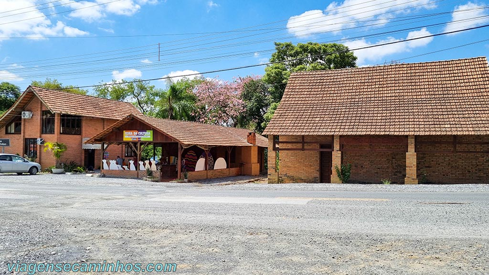
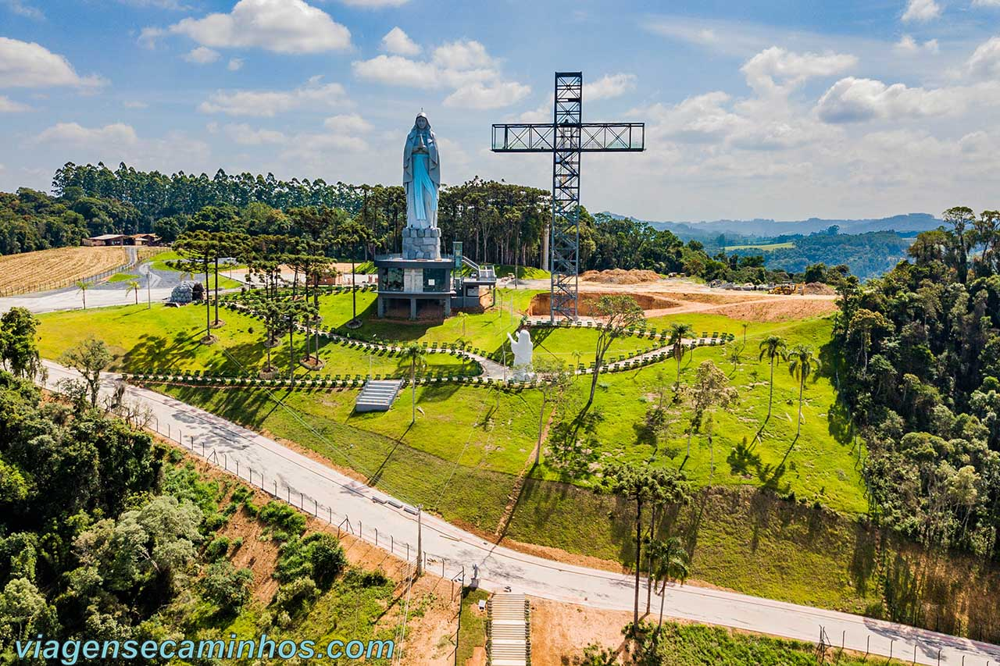
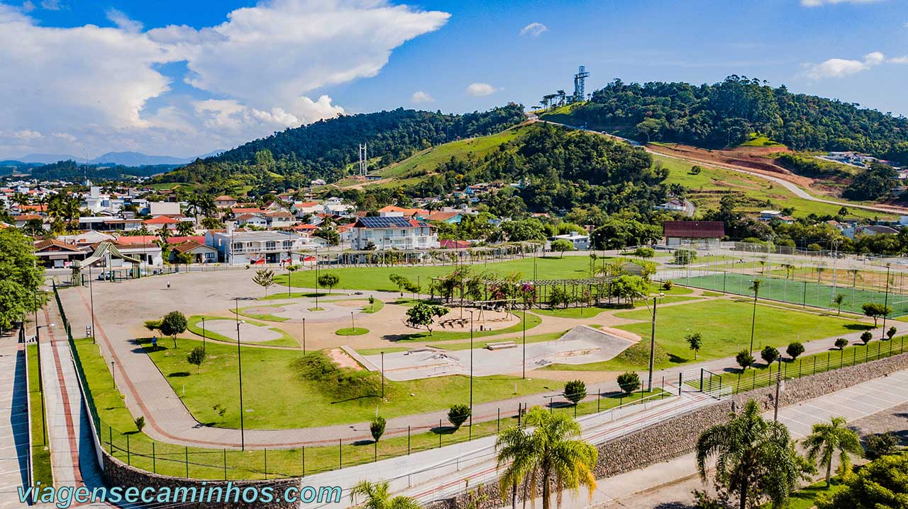

Museu e Casa da Cultura

Inaugurada em 1985, a Casa da Cultura funciona na antiga residência histórica em arquitetura
germânica enxaimel restaurada de Adão Sens e família.
No local funciona também o “Museu dos Pioneiros Edevaldo Cyro Thiesen“, onde estão expostos objetos
em geral doados pelas famílias colonizadoras, que fazem parte da história do município de Ituporanga,
além de utensílios usados pelos índios “botocudos”, que habitavam a região.
Santuário do Louvor Nossa Senhora de Lourdes

O Santuário do Louvor Nossa Senhora de Lourdes foi inaugurado em julho de 2022. É o maior complexo de turismo
religioso do estado de Santa Catarina e já é o principal ponto turístico de Ituporanga SC.
Situado no topo de uma montanha no lado Oeste da cidade, a imponente estátua de Nossa Senhora de Lourdes,
com 40 metros de altura e a cruz ao seu lado, podem ser vistas praticamente de toda a cidade.
Parque da Cidade

O parque da Cidade de Ituporanga é uma ampla área de lazer com 20 mil m² para descanso
e prática de atividades físicas, com pista de caminhada, ciclovia, pista de skate, parquinho,
academia infantil e quadras poliesportivas.